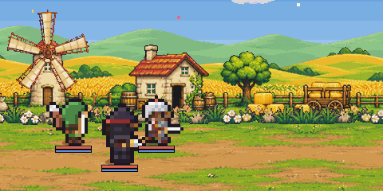

<title>넓은 맵 싸움 미리보기</title>
<meta name="claude:viewport-fit-sides" content="cover">
<link rel="stylesheet" href="https://fonts.googleapis.com/css2?family=Do+Hyeon&family=IBM+Plex+Sans+KR:wght@400;600&display=swap">
<style>
/* 배치: 한 줄 흐름 — 머리 → 순서(번호: 실제 차례) → 붙일 그림 셋(그림 · 크게 보기 · 저장) → 부탁 글 넷(글 · 복사) → 받은 뒤 볼 것.
   색은 궁수 그림에서: 두건 초록 · 가죽 갈색 · 버클 금색. 그림은 밝은 회색 판 그대로 보인다 */
:root {
  --bg: #eeedf4; --surface: #f9f8fc; --panel: #dcd9e8; --fg: #1c1a26; --muted: #5a5770; --line: #c8c4d8;
  --accent: #8a2f2a; --accent-fg: #ffffff; --label: #7a5a0c; --sheet: #c8ccd6; --code: #f3f1f9;
  --font-display: "Do Hyeon", "Apple SD Gothic Neo", "Malgun Gothic", "Noto Sans KR", system-ui, sans-serif;
  --font-body: "IBM Plex Sans KR", "Apple SD Gothic Neo", "Malgun Gothic", "Noto Sans KR", system-ui, sans-serif;
  --font-data: ui-monospace, "SFMono-Regular", Menlo, Consolas, monospace;
}
@media (prefers-color-scheme: dark) { :root:not([data-theme="light"]) { --bg: #16151d; --surface: #1f1d29; --panel: #2e2b3c; --fg: #ebe7f2; --muted: #a39fb4; --line: #383548; --accent: #d0564c; --accent-fg: #ffffff; --label: #f0c45a; --sheet: #c8ccd6; --code: #1b1a24; color-scheme: dark } }
:root[data-theme="dark"] { --bg: #16151d; --surface: #1f1d29; --panel: #2e2b3c; --fg: #ebe7f2; --muted: #a39fb4; --line: #383548; --accent: #d0564c; --accent-fg: #ffffff; --label: #f0c45a; --sheet: #c8ccd6; --code: #1b1a24; color-scheme: dark }
*, *::before, *::after { box-sizing: border-box }
body { background: var(--bg); color: var(--fg); font-family: var(--font-body); font-size: 15px; line-height: 1.6; word-break: keep-all; overflow-wrap: break-word; padding-block: 28px 56px; padding-left: max(16px, env(safe-area-inset-left, 0px)); padding-right: max(16px, env(safe-area-inset-right, 0px)) }
.wrap { max-width: 820px; margin-inline: auto; display: grid; gap: 44px; grid-template-columns: minmax(0, 1fr) }
h1, h2, h3, p, ul, ol, figure, pre { margin: 0 }
ul, ol { padding: 0; list-style: none }
h1, h2 { font-family: var(--font-display); font-weight: 400; text-wrap: balance; line-height: 1.15 }
h1 { font-size: clamp(30px, 7vw, 42px) }
h2 { font-size: 24px }
h3 { font-size: 16px; font-weight: 600 }
.top { display: grid; gap: 10px }
.eyebrow { color: var(--label); font-size: 13px; font-weight: 600; letter-spacing: .04em }
.lede { max-width: 36em }
.sec { display: grid; gap: 18px; grid-template-columns: minmax(0, 1fr) }
.note { color: var(--muted); font-size: 14px; max-width: 44em }
.steps { counter-reset: n; display: grid; gap: 12px; max-width: 46em }
.steps li { counter-increment: n; padding-left: 34px; position: relative }
.steps li::before { content: counter(n); position: absolute; left: 0; top: 1px; width: 24px; height: 24px; display: grid; place-items: center; font: 400 15px/1 var(--font-display); background: var(--accent); color: var(--accent-fg); border-radius: 4px }
.item { display: grid; gap: 10px; grid-template-columns: minmax(0, 1fr) }
.item .what { display: grid; gap: 2px }
.row { display: flex; flex-wrap: wrap; gap: 8px; align-items: center }
.msg { color: var(--muted); font-size: 13px }
.msg:empty { display: none }
.btn { font: 600 14px/1 var(--font-body); padding: 11px 14px; border-radius: 6px; border: 1px solid var(--line); background: var(--surface); color: var(--fg); cursor: pointer }
.btn[aria-pressed="true"] { background: var(--fg); border-color: var(--fg); color: var(--bg) }
.btn.go { background: var(--accent); border-color: var(--accent); color: var(--accent-fg) }
.btn:disabled { opacity: .6; cursor: default }
.btn:focus-visible { outline: 2px solid var(--label); outline-offset: 2px }
.frame { overflow-x: auto; background: var(--sheet); border: 1px solid var(--line); border-radius: 8px }
.frame img { display: block; width: 100%; height: auto; image-rendering: pixelated }
.frame.zoomed img { width: var(--zw); max-width: none }
.frame.soft img { image-rendering: auto }
.attach { color: var(--label); font-size: 13px; font-weight: 600 }
.req { font: 13.5px/1.65 var(--font-body); white-space: pre-wrap; background: var(--code); border: 1px solid var(--line); border-radius: 8px; padding: 14px 16px; max-height: 22em; overflow: auto; -webkit-user-select: text; user-select: text }
.list { display: grid; gap: 10px; max-width: 46em }
.list li { padding-left: 18px; position: relative }
.list li::before { content: ""; position: absolute; left: 2px; top: .62em; width: 6px; height: 6px; background: var(--label) }

.mock { position: relative; width: 100%; aspect-ratio: 2172 / 724; container-type: inline-size; border: 2px solid #000; overflow: hidden; border-radius: 6px; background: #c9d6c2; }
.mock .b { position: absolute; left: 0; right: 0; display: flex; align-items: center; justify-content: center; text-align: center; font-size: 2.9cqw; line-height: 1.25; color: #f2f4e8; box-sizing: border-box; border-top: 1px dashed rgba(0, 0, 0, .45); padding: 0 1cqw; }
.pts { margin: 0; padding-left: 1.2em; display: grid; gap: 4px; }
</style>
<style>.gif { display: block; width: 100%; height: auto; image-rendering: pixelated; border-radius: 10px; background: #000; }</style>
<main class="wrap">
  <header class="top"><p class="eyebrow">미궁도시 라비린토스 · 원정 장면</p><h1>넓은 맵 · 붙어 싸우기</h1><p class="lede">게임에 넣은 그대로를 찍은 6초짜리 장면입니다. 전사 · 도적 · 궁수가 들늑대 · 들쥐 · 뿔토끼와 싸웁니다.</p></header>
  <section class="sec">
    <div class="item"></div>
    <p class="note" id="save-hint">움직이는 그림입니다. 길게 누르면 저장할 수 있습니다.</p>
    <ul class="list"><li>모두 한 줄로 서지 않고 앞뒤로 흩어 섭니다.</li><li>전위(전사 · 도적)는 맡은 몬스터 앞까지 걸어가 붙고, 상대가 쓰러지면 다음 몬스터로 걸어갑니다. 위아래로 엇갈려 있으면 사선으로 갑니다.</li><li>궁수 · 마법사 · 사제 · 짐꾼은 제자리에서 쏘고 돕습니다.</li><li>길드원 그림은 예전에 같이 만든 뭉툭 도트로 되돌렸습니다. 무기마다 다른 공격 동작과 장비 겉모습이 다시 나옵니다.</li></ul>
  </section>
</main>